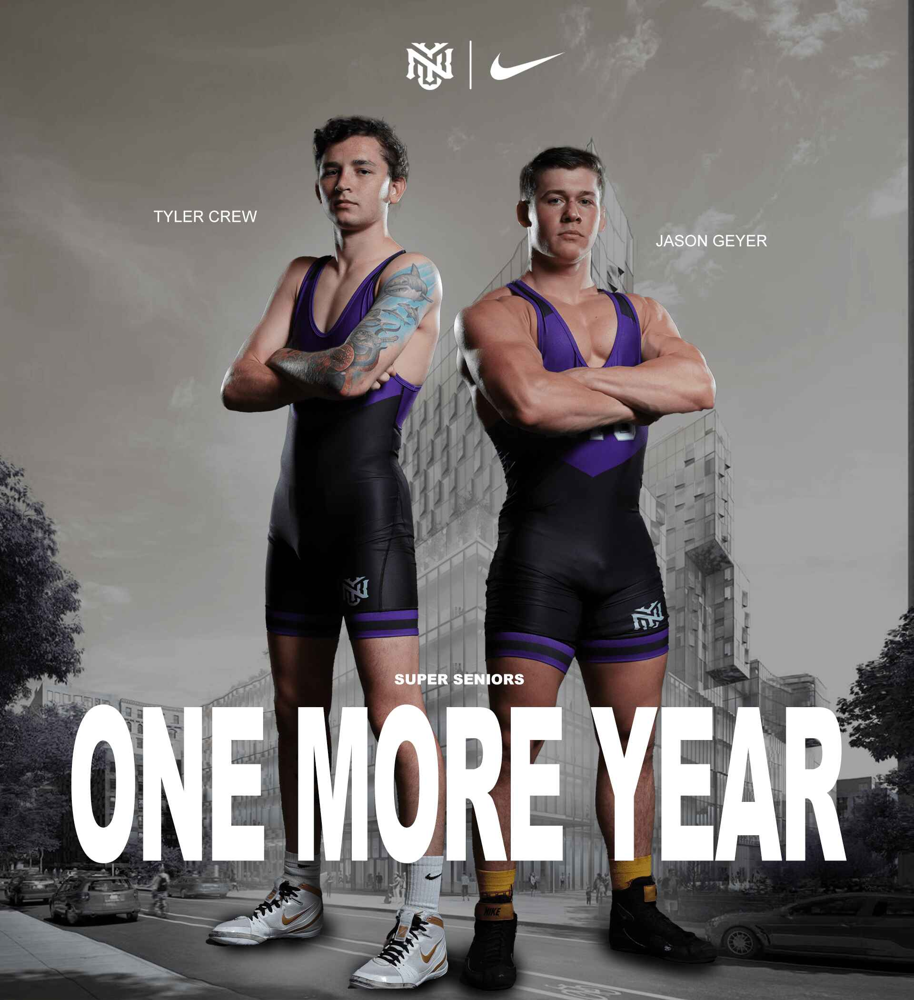
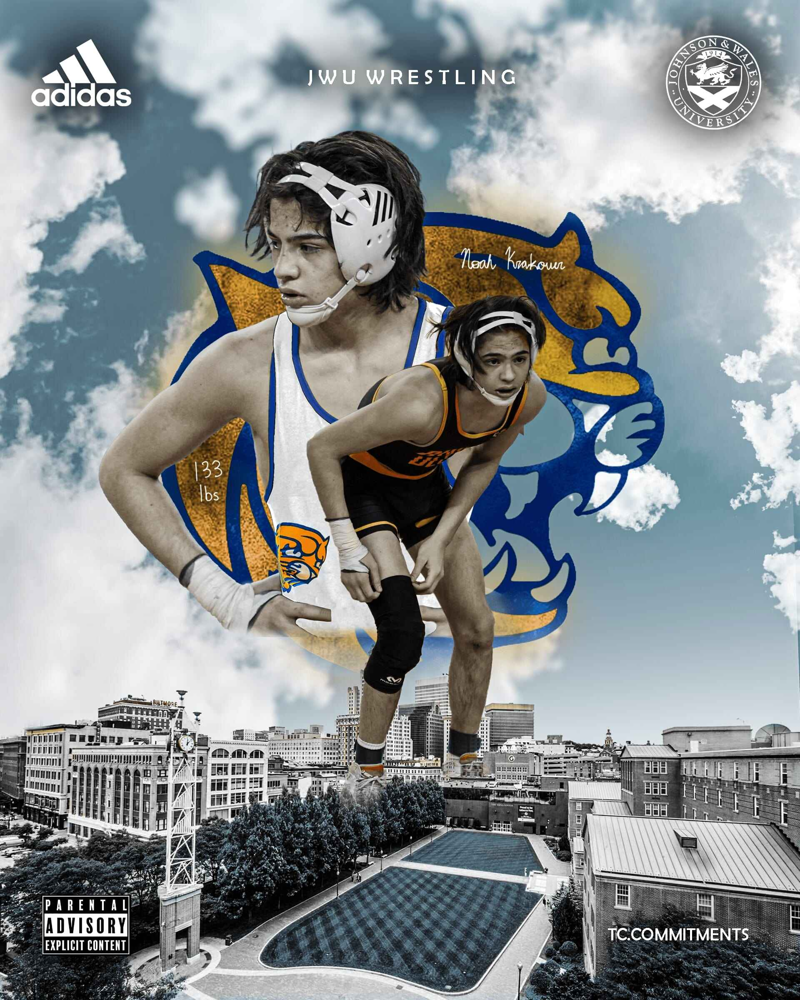
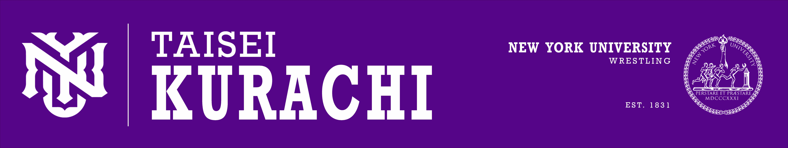
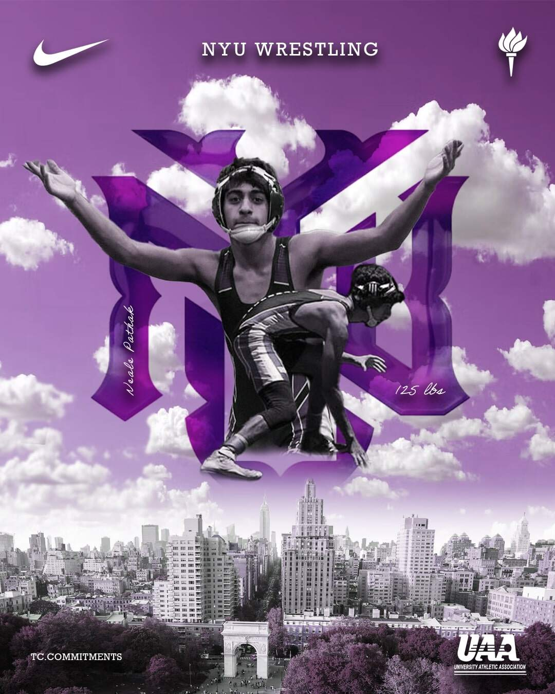
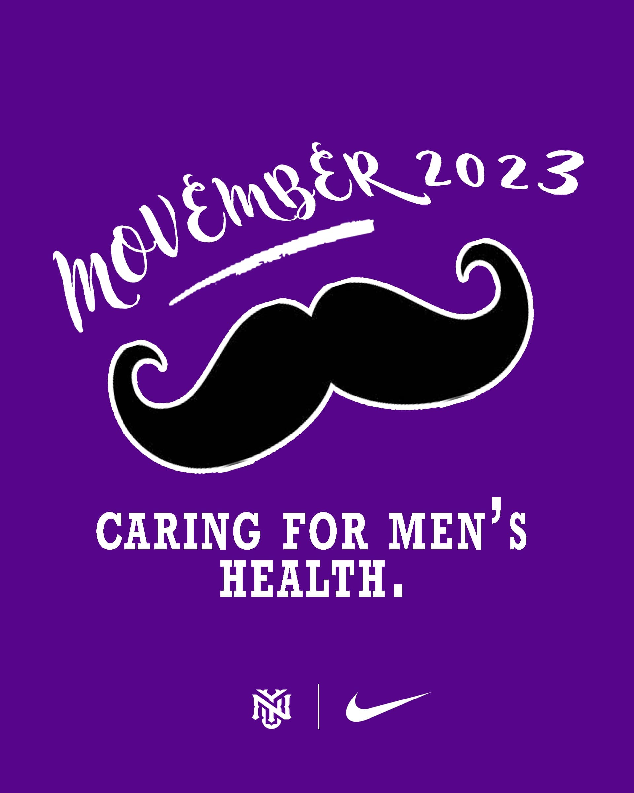

Projects I've completed as a Freelance Graphic Designer mainly for NYU





My role
Graphic design
Communication design
Poster design
My impact
- Designed custom collegiate athletic commitment graphics for prospective athletes using Adobe Photoshop
- Created engaging graphics to boost social media traction on the NYU Wrestling Instagram page by over 20%
- Completed over 20+ freelance graphic design requests with strong customer satisfaction and referral rate
Background
I got into Graphic Design when I first learned to use Photoshop to create my own commitment graphic. I thoroughly enjoyed the learning process, even with its mistakes. My first graphic took over 15 hours to complete, but now I can finish similar projects in less than 30 minutes. After posting my graphic on Instagram, I received countless requests for similar designs, which boosted my confidence and brought me more exposure within the design industry.
I work as a Freelance Graphic Designer for individual clients, mostly incoming NYU wrestlers looking to post their commitment graphic on Instagram or any other social media.